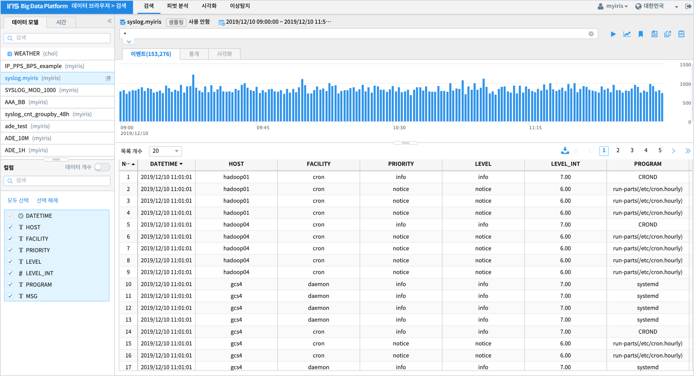
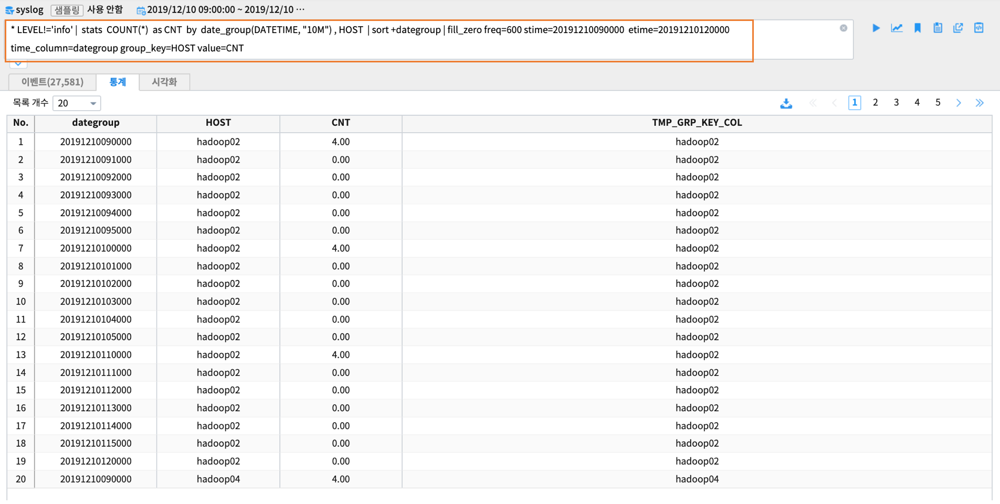
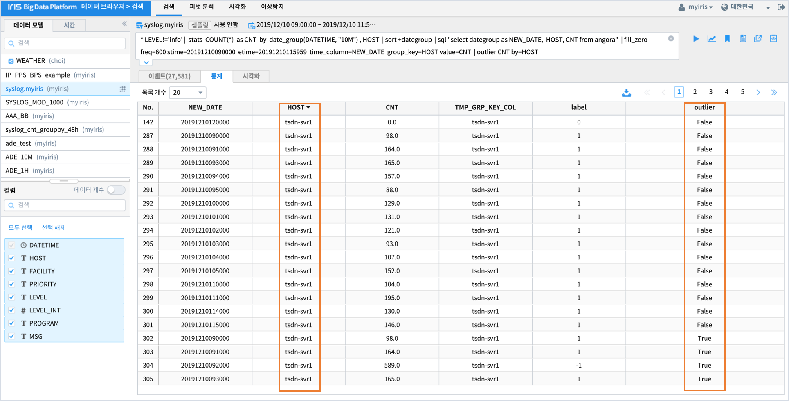
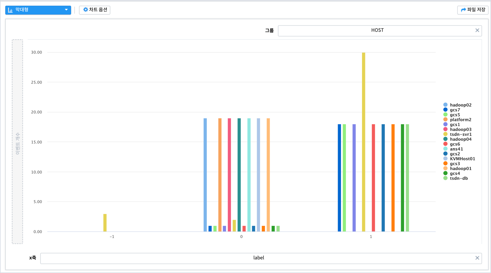

outlier - 그룹내 이상치 탐지¶
여러 그룹을 대상으로 하며 outlier 에 해당하는 그룹을 찾는 명령어 입니다.
목차¶
설명
데이터 탐색
outlier 를 위한 데이터 전처리
실행 결과
결과 해석
설명¶
3개 이상의 그룹(여기서는 HOST별 데이터) 을 대상으로 outlier 에 해당하는 그룹을 찾아 냅니다.
outlier 에 해당하는 그룹 선정 방식은 알고리즘 옵션에 따라 두가지로 나뉩니다.
알고리즘 |
default |
description |
|---|---|---|
dbscan |
default |
데이터를 clustering 하여 어느 cluster 에도 포함이 되지 않는 그룹을 찾아내는 알고리즘 |
mad |
madian(중간값)을 기반으로 anomal 데이터로 판정된 비율이 임계치 이상인 그룹을 찾아내는 알고리즘 |
SYSLOG는 수치 측정값이 없는 로그 데이터이므로 1분, 10분 등 단위 시간동안의 집계 count 를 대상으로 이상탐지를 판단합니다.
기본적인 과정은
10분 단위 집계 데이터 생성합니다.
빠진 단위 시간(10분)은 0 으로 값을 채웁니다.
outlier 명령어를 실행합니다.
데이터 탐색¶
데이터 전처리¶
SYSLOG 는 로그데이터 이므로 outlier 탐지를 위해서 각 그룹별로 동일한 단위 시간(10분, 1시간 등) 의 집계 데이터를 생성해야 합니다.
SQL 로 표현하면
해당 시간에 HOST 별로 SYSLOG COUNT 가 이상 증가 또는 감소한 것이 있는지 파악하고자 합니다.
먼저 검색명령어 창에서 10분 집계 데이터를 HOST 별로 생성하는 명령어를 입력합니다.
* LEVEL!='info' | stats COUNT(*) as CNT by date_group(DATETIME, "10M") , HOST | sort +dategroup
stats 명령어 구문이 검색명령어에 포함되면 결과는 통계탭에 출력됩니다.
HOST 별로 SYSLOG 가 없는 시간(10분단위)은 값을 0 으로 채워야 합니다.
이 때 사용되는 명령어는 fill_zero 입니다.
fill_zero freq=600 stime=20191210090000 etime=20191210120000 time_column=dategroup group_key=HOST value=CNT
freq : 집계 시간 단위. 초. freq=600 은 600초.
stime : 집계시작시간
etime : 집계종료시간
time_column : 시간 컬럼
group_key : group 컬럼
검색명령어 사용 예
* LEVEL!='info' | stats COUNT(*) as CNT by date_group(DATETIME, "10M") , HOST
| sort +dategroup
| sql "select dategroup as NEW_DATE, HOST, CNT from angora"
| fill_zero freq=600 stime=20191210090000 etime=20191210115959 time_column=NEW_DATE group_key=HOST value=CNT
실행 결과¶
dbscan 알고리즘(default)¶
검색 메뉴에서 outlier 실행 하기
명령어 구문
* LEVEL!='info' | stats COUNT(*) as CNT by date_group(DATETIME, "10M") , HOST
| sort +dategroup
| sql "select dategroup as NEW_DATE, HOST, CNT from angora"
| fill_zero freq=600 stime=20191210090000 etime=20191210115959 time_column=NEW_DATE group_key=HOST value=CNT
| outlier CNT by=HOST
실행 결과
결과 해석¶
dbscan 알고리즘은 밀도기반 알고리즘으로 데이터를 클러스터링합니다.
클러스터링 결과 클러스터(결과에서 label 컬럼)별로 다양한 HOST 데이터가 존재하는 것이 일반적인데
오직 1개의 HOST 데이터만 있는 클러스터가 있다면 해당 HOST 데이터가 outlier 라고 판정하는 알고리즘입니다.
시각적으로 HOST, outlier, label 3개 데이터의 관계를 파악해보기 위해 sankey챠트를 그려봅니다.
HOST 중에서 tsdnsvr1 이 outlier = true 인 데이터를 가지고 있으며,
label = -1 에 있는 1개의 HOST 가 tsdnsvr1 임을 알 수 있습니다.
그럼 tsdnsvr1이 다른 HOST 와 비교하여, 어떤 트랜드를 가지고 있는지 파악하기 위해
HOST 별 시계열 라인 챠트를 그려봅니다.
챠트를 보면 특정 시간에 tsdnsvr1 이 다른 HOST 보다 큰 CNT 값을 가지고 있다는 걸 알 수 있습니다.
mad 알고리즘¶
* LEVEL!='info' | stats COUNT(*) as CNT by date_group(DATETIME, "10M") , HOST
| sort +dategroup
| sql "select dategroup as NEW_DATE, HOST, CNT from angora"
| fill_zero freq=600 stime=20191210090000 etime=20191210115959 time_column=NEW_DATE group_key=HOST value=CNT
| outlier CNT by=HOST alg=mad tolerance=2.5 pct=0.1